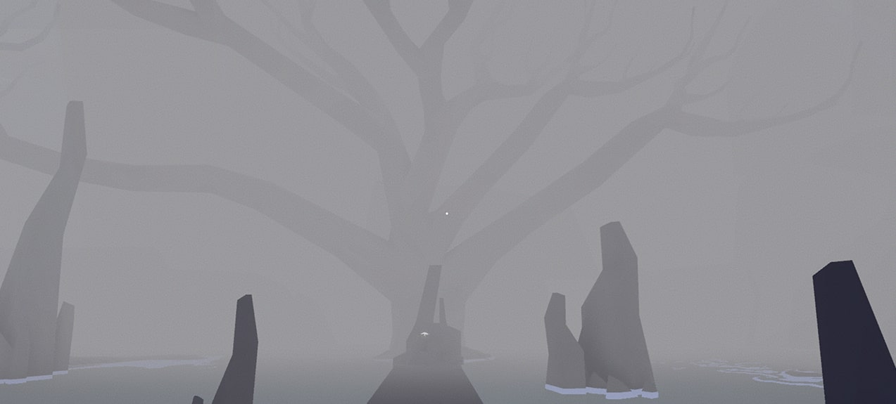

OASIS
First-person puzzle game
2020
View Game
About
The ultimate concept of the game OASIS is to explore the connection between the self and the external environment, tracing from the discussion of childhood to the meaning of growing up, understanding the meaning of the true self through difficulties and challenges.
This is a short-term individual project made for University of Melbourne game jam in 5 days.
Development
Tools
Game development – Unity 3D
3D modelling - Autodesk Maya
Texture design - Adobe Photoshop
Music and sound editing - Logic Pro X
OASIS OASIS OASIS OASIS OASIS OASIS OASIS OASIS OASIS OASIS OASIS OASIS OASIS OASIS OASIS OASIS OASIS OASIS OASIS OASIS OASIS OASIS OASIS OASIS
